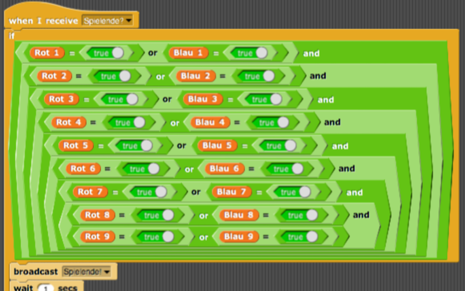

Beim Tic-Tac-Toe spielen kann es natürlich auch passieren, dass es keinen Gewinner / Verlierer gibt, obwohl das Spielfeld schon voll von Markierungen ist. Auch diesen Fall haben wir in unserem Programm bedacht. Auf dem folgenden Screenshot ist das Skript dazu abgebildet:
Erinnerung: Sobald Sprite2 und Sprite3 auf eine Spielfeldzelle gezogen werden, geben sie zwei Broadcast-Nachrichten ab. Die erste, „Feld markieren: Rot / Blau!“ wurde bereits behandelt (Automatische Registrierung und Ankündigung des Gewinners). Die zweite, „Spielende?“ wird vom Spielleiter empfangen und löst das im obigen Screenshot abgebildete Programmstück aus.
Dieses prüft, mit Hilfe des Variablenverzeichnisses, ob alle Spielfeldzellen bereits markiert sind, in einer der zwei Farben. Wenn also Rot1 oder Blau1, Rot2 oder Blau2, ... und Rot9 oder Blau9 „True“ sind, ohne das zuvor ein Gewinner festgestellt wurde, wird das Spiel trotzdem beendet. Dabei ist das „Und“ in der If-Bedingung von hoher Relevanz. Nun nimmt der Spielleiter die Gestalt eines Aliens, von festgelegter Größe (75%), an, begibt sich in die Mitte des Spielfeldes, sagt „Das habt ihr beide gleichermaßen versiebt! Gratulation“, wartet fünf Sekunden und versteckt sich anschließend. Das Programm dazu ist analog zu dem Block „Announce: Red / Blue wins!“ und relativ selbsterklärend:

Durch Klicken der grünen Fahne kann das Spiel nun von neuem beginnen.